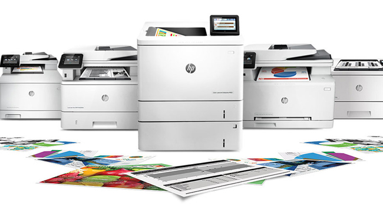

A lézernyomtatók nagyon gyorsak és kiváló minőségű nyomatokat képesek előállítani. Ezek a nyomtatók ideálisak irodai környezetben, ahol nagy mennyiségű dokumentumot kell nyomtatni.
Használnak egy lézerfényt a képalkotáshoz, amelyet a nyomtatási felületre vetítenek, majd egy porlasztó egységgel rögzítik a festéket vagy a tonert a papírra.
A tintasugaras nyomtatók kiválóak színes nyomatok készítésére, és gyakran alkalmazzák fotónyomtatásra. Ezek a nyomtatók könnyen kezelhetők, és általában olcsóbbak, mint a lézernyomtatók.
Egy tintapatront vagy tintapatronokat használnak a festék vagy a tinta felvitele érdekében a papírra.
A pontmátrixos nyomtatók olyan mechanikus nyomtatók, amelyek egy sor tűt használnak a karakterek és képek nyomtatásához. Ezek a nyomtatók hangosak és lassúak, de ideálisak olyan helyzetekben, ahol fontos a kopásállóság, például számlanyomtatásra.
Általában kisebb felbontással rendelkeznek, mint a lézernyomtatók vagy a tintasugaras nyomtatók.
A hőszublimációs nyomtatók általában fotónyomtatásra és speci 